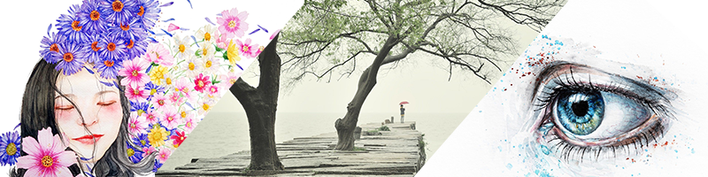
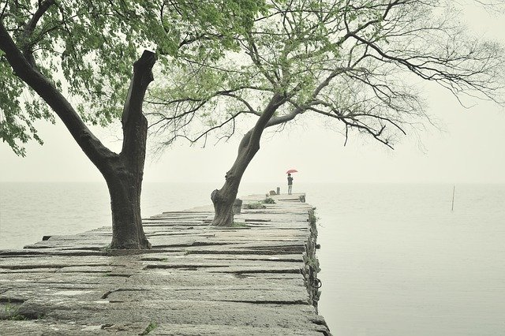
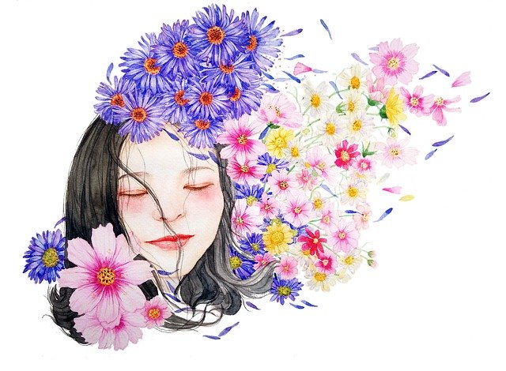

- 
Voltaire Cameron Valino
Biography
My name's Voltaire and I’m an upcoming visual designer who wishes to apply his skills to allowing others to express their vision and share their projects. I was born in November 20th, 1998 and raised in Daly City, California. I've lived most of my life in California, only leaving out of the state/country for short periods of time for vacations and such, ranging from sightseeing at New York then roadtripping down to Florida, to visiting my extended family in the Philippines. My main hobby is playing rhythm games, more specifically the dance games: Dance Dance Revolution and Pump It Up. I play mainly casually, wanting to improve in these games for the fun and challenge of it but not to the point of competitive play. I've also been trying to make time for trying to brush up on my knowledge of Spanish and learning Japanese for fun.
As a kid, I wanted to become a doctor or a dentist so that I can support and help people in the future, but as I grew up, I strayed from the idea of those professions as I become more conscious about my clumsiness and how that's probably going to result in not-so-helpful outcomes. However, I still wanted to apply myself to helping others in some way. So now, I have two ideas to fulfill this wish: help people advertise or entertain them, both of which may not be physical support, but I feel can be a valid way of assistance. In the first idea, my wish to support people is more toward the idea of lending them a "megaphone" in a sense to let their visions and ideas be heard to the world. The other idea is more supporting in a comforting sense since this world a pretty wild place, and providing some entertainment to unwind to sounds nice. Now, with this cause in mind, I’m slowly honing myself so that way I can be a reliable asset to those who want to work with me.
Resume
- Skyline College - 2016-2018
- Hollister - Dec 2018-Feb 2018
- San Francisco State University - 2019-Current
Portfolio (Note that I borrowed these from pixabay)

It's a watercolor of an eye that I decided to do to practice lighting perception.
- 
This art of the pier was made to capture my mood as I stare at Daly City's fog.
- 
This flowery piece was just me wanting to have fun with colors.